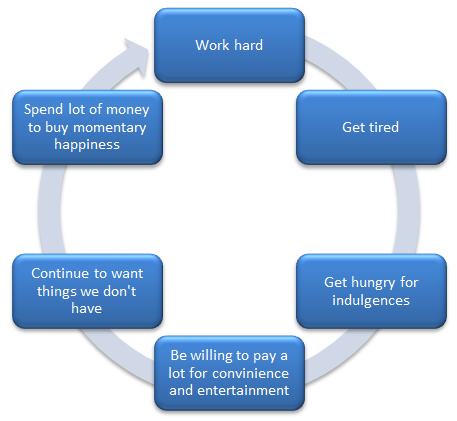

|
Social constructionism or the social construction of reality means an understanding of the world based on society’s shared ideas and assumptions about reality. As society became complex, the creation of social organizations also became necessary for members to maintain a sense of community and stay connected with one another. |
Accordion
Max Weber (1864-1920) a German sociologist whose influence was greatly felt on the development of Western society, developed his theories around the Marxist capitalist ideas.

Paid work became a means for workers to be distinguished as successful individuals. The new capitalistic society was driven by wealth accumulation where life was organized around the idea of producing, consuming, and increasing personal wealth.
More work means more money, but also means less time to spend with family. Earning more money then leads to an elevated spending and lifestyle, creating a cycle of earning and spending.
Weber wrote extensively about his concept of “ideal types” which is a way of looking at social structures to better understand them and their context. People’s behaviors are evaluated based on preconceived ideas for each situation or aspect of society (e.g., how we behave in public places or events). A “normal” or “acceptable” behavior is defined and created, and we are considered normal if we adhere to it. A deviation from it becomes socially unacceptable.
Since a bureaucracy was described as a goal-oriented organization designed to achieve its objectives with efficiency and order, Weber saw it as an ideal type. For him, it has to be a form of authority that guards against arbitrary and unjust use of power. In reality, however, his ideal type of bureaucracy is plagued by examples of bureaucrats who misuse their position of authority.
For Weber’s idealism to achieve a sustainable outcome, society has to work toward rationalization as a process of modern society. It is concerned with efficiency and predictability.
Efficiency works toward achieving the maximum results with a minimum amount of effort while predictability is knowing future outcomes.
Feminism is important when addressing inequality as a means for social change. This social movement is devoted to fighting against the daily practices of inequality and equal rights between the sexes within the context of social institutions such as the family, religion and the workplace.
The industrial revolution gave rise to men working in factories while the women stayed at home to raise children. Earning a wage was seen as more important than housework or raising a family, thereby creating the power disparity between men and women. As the men came to run the social systems outside the home, more rights and privileges were afforded to them. The roles men and women fulfill in society all the more reinforced the inequalities between them, not to mention the growing disparity between and among classes of society.
Canada’s 2016 census showed a slightly higher female (50.9%) population than male (49.1%). This literally means that women own half of Canadian sky. But a closer look at history will reveal that Canadian women are underrepresented particularly when it comes to political power, though women representation in present day Canada is gaining ground.
The following list shows some examples of how Canadian women fared in political life:
Laws intended to protect disadvantaged individuals and groups in power relationships and to address historical injustices have a role in changing society. Positive steps that are being taken to increase the representation of historically disadvantaged groups (either by virtue of their sex, skin color, race, or religion) are called affirmative action.
Affirmative action - type legislations try to ensure equal opportunities or at least lessen the gap between and among sexes and social classes in many social aspects such as wealth, politics, business, employment, and healthcare.
Positivism focuses solely on knowledge derived from sensory experience rather than derived from intuition. For the positivists, the reality, logic, and clearly defined processes are used to categorize and explain human behavior.
They only understand and accept quantifiable results and evidence from scientific methods and inquiries. Scientific methods and statistics are believed to legitimize the results, making the findings of the study more credible and can hold up against scrutiny.
Multiple Choice
Multiple Choice
Multiple Choice
Multiple Choice
Multiple Choice